| 공모명 | 온음(Oneum), 구음장애인을 위한 개인 맞춤형 AI 의사소통·발음 재활 보조 서비스 |
|---|---|
| 팀명 / 대표 | 티키타카 / 서연우 |
| 제출처 | 제9회 D-Tech 공모전 · 인큐베이팅 트랙 (Track 1) |
| 제출일 | 2026년 9월 11일 |
| 코드 저장소 | github.com/Jeonsubb/oneum (공개) |
구음장애(마비말장애)는 뇌성마비·뇌졸중·파킨슨병 등으로 발음 근육의 조절이 어려운 상태이며, 인지와 언어 능력은 온전한 경우가 많습니다. 그러나 범용 음성인식의 성능은 구음장애 발화에서 급락합니다. 자체 실측에서 범용 whisper-small의 글자 오류율은 42.9%였고, 미국 Speech Accessibility Project 실측에서도 일반 화자 3.4%였던 단어 오류율이 파킨슨병 관련 구음장애 화자(211명)에서 36.3%로 벌어졌습니다.
더 심각한 문제는 오류율 자체가 아닙니다. 음성인식은 신뢰도가 낮아도 문장 하나를 그대로 출력하므로, 오인식된 문장이 "그 사람의 말"로 상대에게 전달될 수 있습니다.
저희는 이를 "인식률 문제"가 아니라 "오인식을 누가 통제하는가"의 문제로 정의하고, AI는 후보를 제시하되 사용자가 확정한 문장만 출력하는 의도 확인형 의사소통 보조와, 상황별 문장·낭독 연습 기반의 발음 훈련 보조를 함께 제공하는 서비스를 설계·구현했습니다.
기술 검증을 위해, 정부가 공개한 AI Hub 「구음장애 음성인식 데이터」로 음성인식 모델(whisper-small)에 구음장애 발화를 추가 학습시켰습니다(파인튜닝). 모델이 한 번도 들어 본 적 없는 구음장애 화자 9명의 발화 400개로 시험한 결과, 100글자를 받아 적을 때 약 43글자를 틀리던 것이 약 19글자 수준으로 줄었습니다(글자 오류율 42.9%→18.7%, 검증 전 내부 실측값).
서비스는 이 특화 모델(정확한 1순위 담당)과 범용 클라우드 음성인식(여러 후보 담당)을 동시에 돌려 서로 보완하는 방식(앙상블)에, 자주 쓰는 문장·교정 기록 기반의 후보 재정렬, 확정 게이트, 연습으로 검증된 문장만 허용되는 빠른 발화, AI 상대역과의 대화 연습을 더해 구성되며, 전 흐름을 iOS 앱으로 구현해 실기기에서 동작을 확인했습니다.
이하 2장은 문제의 규모와 근거, 3장은 설계, 4장은 구현, 5장은 실험 결과와 한계를 지원서보다 상세히 기술합니다.
| 장 | 내용 |
|---|---|
| 1 | 서론: 배경과 문제 정의 |
| 2 | 문제 분석: 대상 인구, 인식 성능 격차, 당사자가 겪는 장면, 기존 해결책의 공백 |
| 3 | 시스템 설계: 설계 원칙, 시스템 구성, 아키텍처, 사용자 플로우 |
| 4 | 구현: 기능 명세, 화면 구현, 인식 모델 학습 파이프라인 |
| 5 | 실험 및 평가: 평가 설계, 결과, 한계 |
| 6 | 결론 및 향후 과제 |
| — | 참고 자료 / 부록 A. 서비스 포스터 |
말할 내용이 분명한 사람이 발음 때문에 "말할 수 없는 사람"이 됩니다. 구음장애인은 전화에서 상담원이 끊거나 대리인을 요구받고, 대면에서는 취객이나 인지장애로 오해받는 낙인을 겪으며, 시리·ARS·AI 콜봇 등 음성 인터페이스 전반에서 사실상 배제됩니다. 손 사용까지 어려운 뇌성마비 당사자에게는 음성이 유일한 대안인데 그 문이 닫혀 있습니다.
주목할 점은 이것이 기술 부재의 문제가 아니라는 사실입니다. 정부는 2021년 AI Hub에 화자 1,200명·5,000시간 이상의 구음장애 음성 데이터를 구축했고, 2025년에는 이 데이터를 활용한 국내 학술 연구도 발표되었습니다.
그러나 이 데이터를 사용한 상용 서비스는 조사 시점(2026년 8월) 기준으로 확인되지 않았습니다. 저희는 그 원인을 "오인식이 불가피한 도메인에서 오인식을 다루는 제품 설계가 없었기 때문"으로 진단하고, 오류를 없애는 접근 대신 사용자가 오류를 통제하는 구조(확정 게이트)를 중심에 둔 서비스를 제안합니다.
이 보고서는 지원서에 담지 못한 상세를 다룹니다: 문제의 규모를 뒷받침하는 통계와 출처(2장), 시스템의 내부 구조와 데이터 흐름(3장), 기능 단위 구현 현황과 학습 파이프라인(4장), 그리고 실험 조건과 수치의 한계(5장)입니다.
보건복지부 등록장애인 통계(2024년 말 기준, 2025년 4월 발표)를 기준으로 하면 다음과 같습니다.
| 항목 | 수치 | 출처·비고 |
|---|---|---|
| 등록장애인 전체 | 2,631,356명 (인구의 5.1%) | 보건복지부 등록장애인 통계 (2024년 말) |
| 언어장애 등록 | 약 2.4만 명 (0.9%) | 등록 기준 — 실제 의사소통 곤란 인구의 일부 |
| 뇌병변장애 등록 | 약 23.4만 명 (8.9%) | 상당수가 구음장애 동반 (뇌성마비·뇌졸중 등) |
| 의사소통 곤란 장애인 (서울) | 약 17.6만 명 | 서울시 조사 — 서울 등록장애인의 44.6% |
| 65세 이상 등록장애인 비율 | 54.3% | 뇌졸중·파킨슨병의 고령 발병 특성상 대상 인구 감소 가능성 낮음(추정) |
등록 언어장애 2.4만 명은 대상 인구의 하한선입니다. 구음장애는 별도 등록 유형이 아니라 뇌병변·파킨슨병·뇌졸중 후유증에 동반되는 경우가 많아, 서울시 조사처럼 "의사소통 곤란" 기준으로 집계하면 서울에서만 등록장애인의 44.6%(약 17.6만 명)에 이릅니다.
65세 이상이 등록장애인의 54.3%이고 뇌졸중·파킨슨병이 주로 고령에서 발병하는 점을 고려하면 대상 인구가 줄어들 가능성은 낮다고 해석되나, 이는 직접 통계가 아닌 추정입니다. 한편 장애인의 차별 경험 인식은 2020년 63.5%에서 80.1%로 높아졌습니다(장애인 실태조사).
| 측정 | 일반 화자 | 구음장애 화자 | 출처 |
|---|---|---|---|
| 단어 오류율(WER), 영어 | 3.4% | 36.3% | Speech Accessibility Project (JSLHR, 2024) — 파킨슨병 관련 구음장애 211명 |
| 글자 오류율(CER), 한국어 | — | 42.9% | 자체 실측 — 범용 whisper-small, AI Hub 검증 화자 |
오류율은 음성인식이 받아 적은 결과가 실제 말과 얼마나 다른지를 나타냅니다. 예컨대 글자 오류율 42.9%는 100글자 중 약 43글자를 틀리게 받아 적는다는 뜻입니다. 위 표의 격차는 10배가 넘습니다(3.4% 대 36.3%). 이 격차는 두 층위의 문제로 이어집니다. 첫째, ARS·콜봇·음성비서 등 음성 자동화가 확대될수록 구음장애인이 접근할 수 없는 서비스도 함께 늘어납니다.
둘째, 음성인식은 신뢰도가 낮아도 문장 하나를 출력하므로, 오인식된 문장이 "그 사람의 말"로 상대에게 전달될 수 있습니다. 이는 의사소통 실패를 넘어 의사 왜곡입니다. 이 두 층위 때문에 온음은 인식률 개선과 오출력 통제를 별개의 요구사항으로 정의했고, 후자를 제품 구조(확정 게이트)로 풀었습니다.
시장 신호: 구글은 비정형 발화 인식(Project Relate)을 시도했으나 한국어를 지원한 적이 없고 현재 신규 등록이 중단됐습니다. 상용 서비스 Voiceitt(이스라엘)는 영어 전용입니다. 즉 수요는 국제적으로 확인됐지만 한국어 사용자는 선택지가 없습니다.
| 구분 | 한국어 | 인식 방식 | 오인식 처리 | 현재 상태 |
|---|---|---|---|---|
| Voiceitt (이스라엘, 상용) |
미지원 (영어) | 개인별 음성 학습 | 인식 즉시 출력 | 서비스 중 (구독) |
| Project Relate (Google) |
미지원 | 500문장 녹음 훈련 후 개인 모델 | 인식 즉시 출력 | 신규 등록 중단 |
| Live Speech (Apple, iOS 내장) |
지원 | 음성인식 아님 (타이핑을 읽어줌) | 해당 없음 | 제공 중 (발화 대체) |
| AAC 앱 (다수) | 지원 | 음성인식 아님 (버튼으로 문장 재생) | 해당 없음 | 제공 중 (발화 대체) |
| 국내 학술 연구 (2025, ASR→TTS) |
지원 (연구) | 특화 음성인식 후 곧바로 음성 합성(기계 음성) 출력 | 다루지 않음 (논문 스스로 실사용자 평가 부재를 한계로 명시) |
논문 (서비스 아님) |
| 온음 (제안) | 지원 | 파인튜닝 + 범용 앙상블, 녹음 훈련 없이 문장 등록으로 개인화 |
후보 제시 → 사용자 확정 게이트 (오인식을 제품 구조로 흡수) |
실기기 동작 프로토타입 |
| 원칙 | 내용 |
|---|---|
| ① 승인 없는 발화 0건 | 확정 게이트를 지나지 않은 문장은 어떤 경우에도 재생되지 않습니다. 소리가 나는 지점은 코드 구조상 두 곳(확정 후 재생, 사전 승인된 빠른 발화)으로 제한됩니다. |
| ② 불확실성 공개 | 인식 신뢰도를 %로 포장하지 않고 후보 나열로 보여줍니다. "이 중에 없어요"가 후보와 같은 크기의 정당한 답입니다. |
| ③ 실패해도 대화는 계속 | 막다른 화면을 만들지 않습니다. 다시 말하기·직접 입력·문장 수정의 길이 항상 열려 있고, 2회 실패 시 재발화를 더 권하지 않습니다. |
| ④ 한 화면 한 작업 | 주 터치 타깃 64pt 이상, 시간 제한 없음, 유니버설 디자인 서체(KoddiUD 온고딕). 진행성 질환을 배려해 점수·등급·타인 비교를 어디에도 두지 않습니다. |
| 계층 | 기술 | 역할 |
|---|---|---|
| 모바일 앱 | React Native (Expo SDK 57), TypeScript | 전 화면·확정 게이트·재정렬·판정기·기기 내 저장. iOS 실기기 동작, 안드로이드 빌드 가능 구조 |
| 백엔드 | FastAPI (Python), 무상태 | API 키 보호와 중계. 앙상블 병합(두 엔진 일치 시 신뢰도 가산). 한쪽 엔진 실패 시에도 진행 |
| 인식 모델 | whisper-small 파인튜닝 (244M) | AI Hub 구음장애 데이터 학습. 인터넷 없이 휴대폰 안에서 실행(온디바이스)할 수 있는 크기(로드맵) |
| 보조 AI | Azure Speech, Gemini | 다중 후보 생성 / 저신뢰 복원·대화 상대역. 교체 가능한 구조(공급자 추상화) |
연습·대화 탭의 플로우는 다음과 같습니다. 연습(상황·읽기)은 문장당 3회 읽기 → 문장별 인식 검증 → 통과 시 사용자의 명시적 등록으로 이어집니다(등록 당일은 게이트 경유, 다음 날부터 즉시 재생). AI 대화 연습은 말하기 → 전사 → AI 상대역의 음성 응답이 반복되는 구조이며, 실사용 경로와 분리되어 있습니다.
서비스 기능은 내부 아키텍처 명세서(v3)의 기능 ID로 관리합니다. 아래는 접수 시점(2026년 9월)의 구현 현황입니다.
| ID | 기능 | 설명 | 상태 |
|---|---|---|---|
| SF-01 | 개인 표현 프로필 | 자주 쓰는 문장 등록(추천 담기·직접 입력)·삭제. 상황 태그 지정 | 구현 완료 |
| SF-02 | 발화 단위 음성인식 | 파인튜닝 Whisper + Azure 2엔진 동시 호출, 후보 병합(일치 시 신뢰도 가산) | 구현 완료 |
| SF-03 | 후보 재정렬·LLM 복원 | 발음 유사도로 등록 표현·교정 기록과 대조해 재정렬. 인식이 불확실하면 대형 언어모델(LLM)이 의도 후보를 복원("제안" 표식) | 구현 완료 |
| SF-04 | 의도 확인 장치 | 확정 게이트 — 확신 시에도 묻고, 불확실 시 후보 2~3개 + "이 중에 없어요" | 구현 완료 |
| SF-05 | 오류 복구 경로 | 다시 말하기·직접 입력·문장 고치기. 2회 실패 시 재발화를 강요하지 않음 | 구현 완료 |
| SF-06 | 확정 문장 출력 | 큰 글자 + TTS. 문장 탭 → 상대에게 화면 가득 보여주는 대면 모드 | 구현 완료 |
| SF-07 | 교정 이력 축적 학습 | (오인식→확정) 짝을 저장해 다음 재정렬과 AI 복원의 참고 자료로 활용. 모델 재학습 없는 개인화 | 구현 완료 |
| SF-08 | 개인정보 통제 | 기기 내 저장, 전송처 상시 고지, 연습 녹음 용도별 분리 동의 | 구현 완료 |
| SF-09 | 외부 스피커 출력 | 우선 시중 목걸이형 블루투스 스피커 페어링(OS 기본)으로 시작하고, 향후 웨어러블형 스피커 연동·제작을 검토 | 기기 기본 |
| SF-10 | 문장 등록 도우미 | 상황별 추천 문장 20문장 탭 1회 담기 (녹음·타이핑 없이 시작) | 구현 완료 |
| SF-11 | 상황별 표현 세트 | 일상·병원·매장·공공기관 4상황. 수동 선택(자동 추정 안 함, DD-06) | 구현 완료 |
| SF-12 | 연습 모드 | 상황 연습 + 읽기 연습(시·뉴스·문단). 문장당 3회, 점수·등급 없음 | 구현 완료 |
| SF-13 | 연습 녹음의 적응 전환 | 연습 녹음 → 문장별 인식 검증 데이터. 발음 적응 학습은 본선 로드맵 | 부분 구현 |
| SF-14 | 빠른 발화 경로 | 검증·등록 문장만 6조건 판정 후 즉시 재생. 금액·동의·거절·개인정보 차단 | 구현 완료 |
| SF-15 | 발화 취소 | 재생 전 0.5초 + 재생 후 3초 취소. 취소 문장 자동 잠금, 기록 열람 | 구현 완료 |
| 추가 | AI 대화 연습 | 명세 외 추가 구현 — AI 상대역과 상황극(병원 접수·카페·주민센터), 연습 전용 | 구현 완료 |
이하 화면은 실기기에서 동작 중인 앱을 캡처한 것입니다. 어떤 경로로 들어와도 전달 화면으로 합류하며, 막다른 화면이 없습니다.
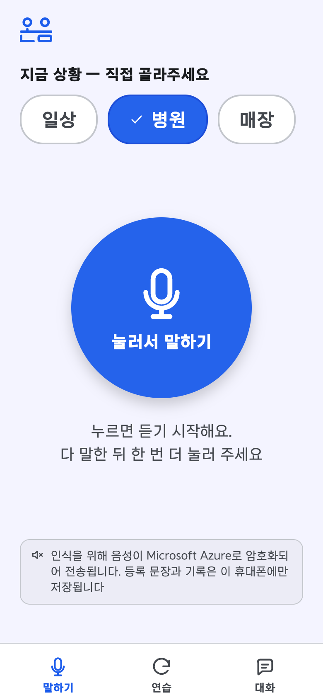
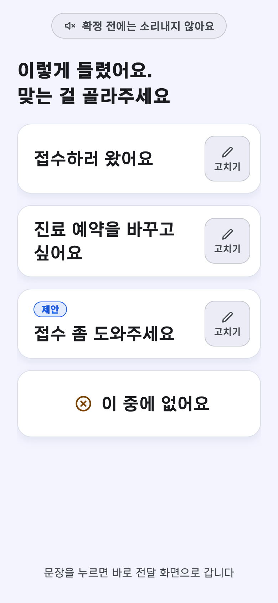
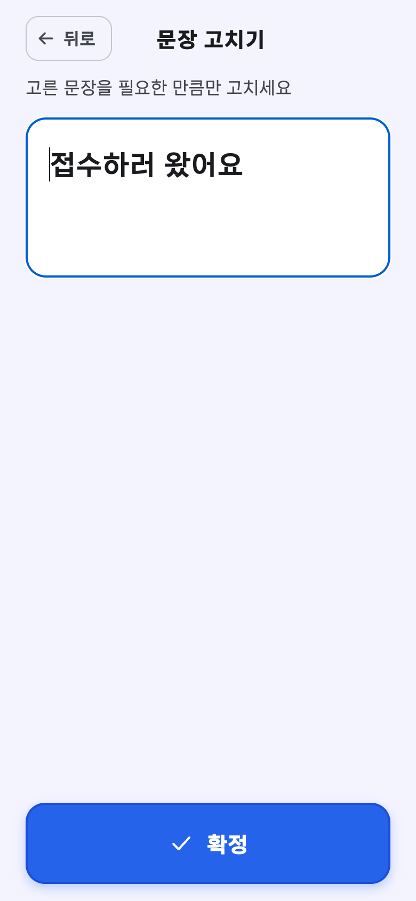
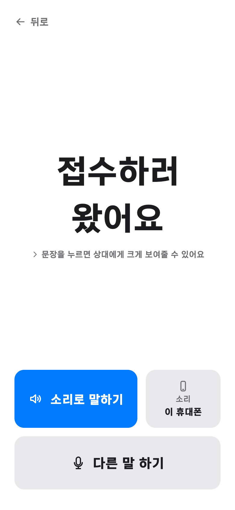
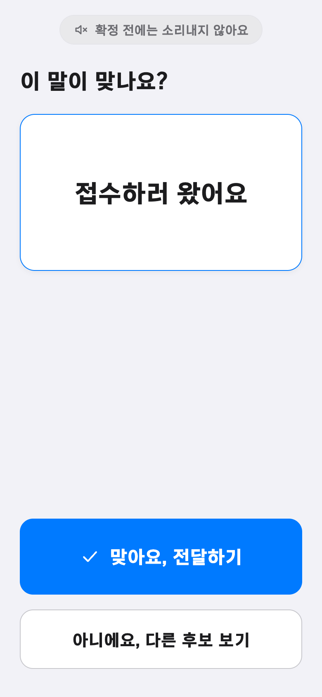
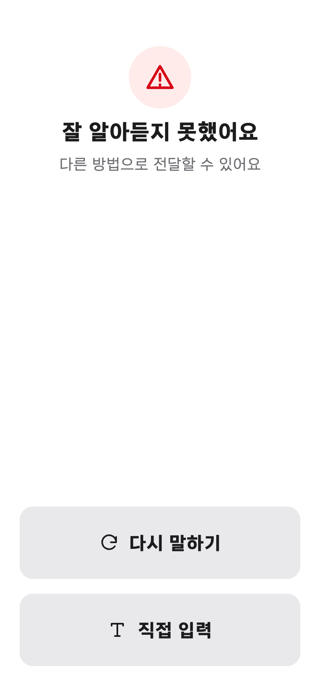
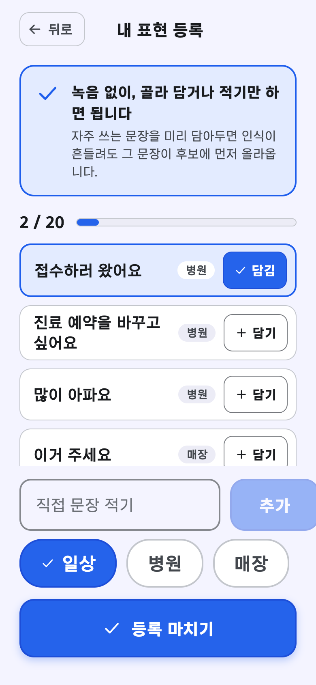
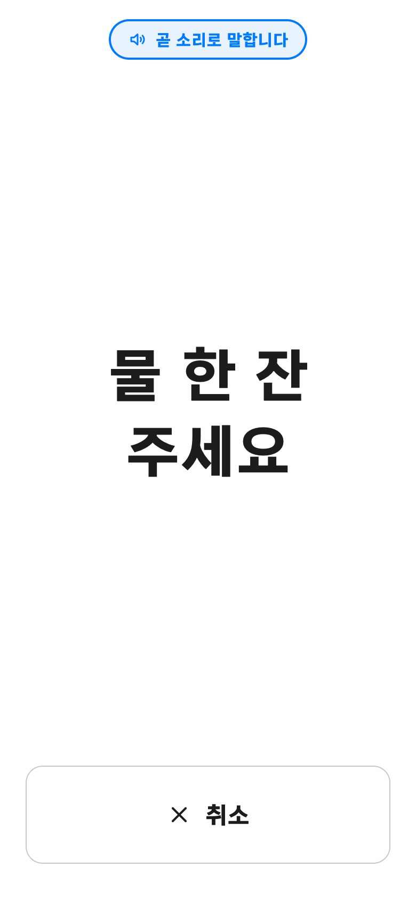
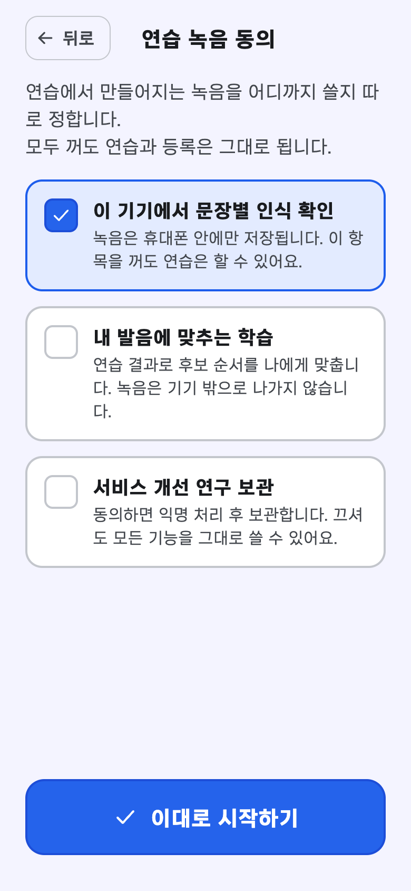
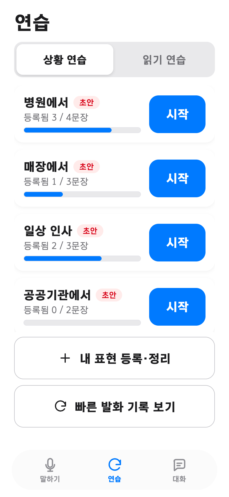
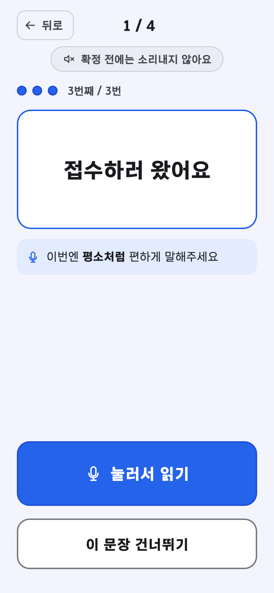
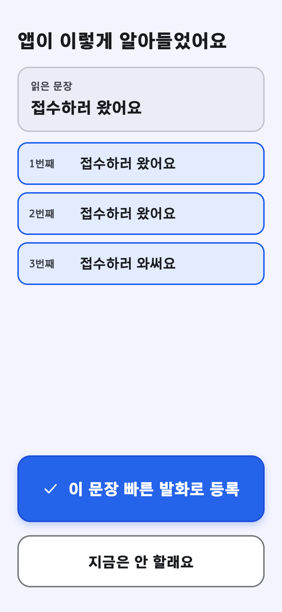
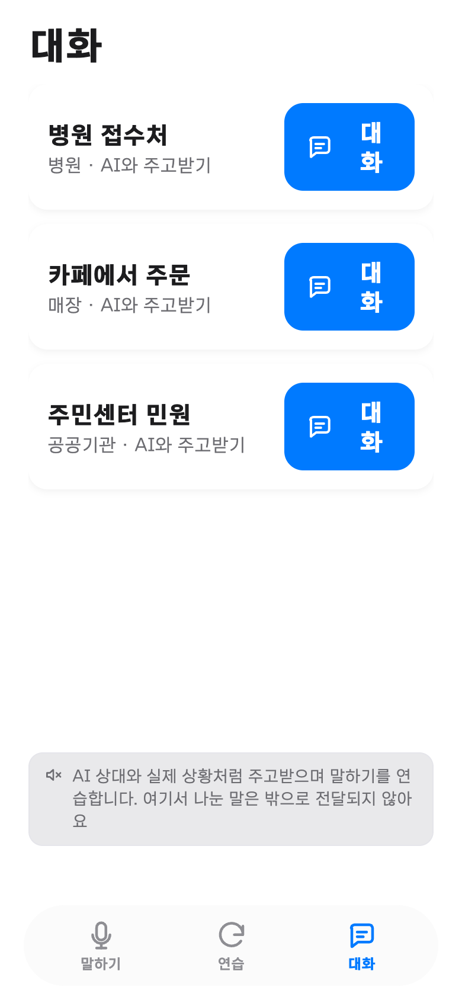
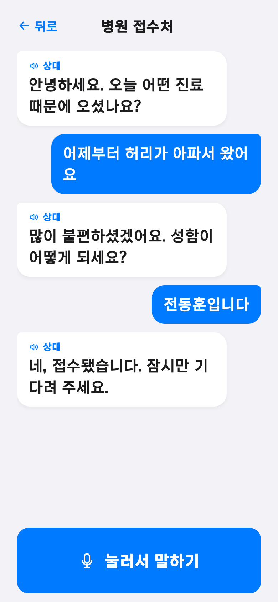
지원서에 수치만 실은 파인튜닝의 과정 전체를 기술합니다. 전 과정이 재현 가능한 스크립트로 공개 저장소에 있습니다.
| 단계 | 내용 | 결과 |
|---|---|---|
| 원천 | AI Hub 「구음장애 음성인식 데이터」 뇌신경장애 파트 (Training 원천) | 423파일 · 258.8시간 |
| 발화 분할 | 정답 텍스트가 파일 전체(평균 25분, 최대 8.5시간)를 한 덩어리로 받아 적은 형태여서, 말소리 구간 자동 검출 기술(VAD)로 발화 단위를 잘라냄 | — |
| 텍스트 정렬 | "말이 길수록 글자 수도 많다"는 성질을 이용해 잘라낸 구간과 문장을 자동으로 짝지음(동적 계획법 정렬) | 32,415클립 · 34.9시간 |
| 정렬 검증 | 파일 단위 정렬 검증으로 라벨이 어긋난 27개 파일(2,277클립) 제거 | 17,268클립 학습 사용 |
평가는 학습에 사용하지 않은(held-out) 화자로만 수행했습니다. 주 평가 자료는 AI Hub 학습용 원천에서 떼어 둔 화자 9명의 문장형 발화 400개(클립)이며 파일 단위 정렬 검증을 통과한 클립만 포함합니다. 일반화 확인용 보조 평가셋은 Validation 원천의 단일 원인 유형 4종(유형당 150클립, 학습 화자 제외)입니다.
지표는 글자 오류율(CER)과 단어 오류율(WER)을 썼습니다. 4.4절의 학습 파이프라인을 포함해 전 과정이 재현 가능한 스크립트로 공개되어 있습니다.
| 모델 | 크기 | 글자 오류율(CER) | 단어 오류율(WER) |
|---|---|---|---|
| whisper-small (범용) | 244M | 42.9% | 69.3% |
| whisper-large-v3-turbo (범용, 3.3배 크기) | 809M | 29.5%* | 51.1%* |
| whisper-small 온음 파인튜닝 (최종) | 244M | 18.7% | 28.6% |
* whisper-large-v3-turbo는 정렬 검증 이전 평가셋의 수치이므로 절대값 비교는 제한적입니다. 다만 244M 파인튜닝 모델이 3.3배 큰 범용 모델을 앞선다는 결론은 두 평가셋 모두에서 동일했습니다.
| 학습에 없던 장애 유형 | 범용 CER | 파인튜닝 CER | 개선율 |
|---|---|---|---|
| 중풍(뇌졸중) | 15.3% | 4.1% | 73% |
| 뇌부상 | 22.3% | 10.3% | 54% |
| 뇌성마비 | 21.2% | 11.1% | 48% |
| 기타 및 복합 | 21.0% | 13.0% | 38% |
학습은 복합장애 유형으로만 진행했음에도 네 유형 모두에서 오류율이 낮아졌습니다. 이는 모델이 특정 화자의 발화를 암기한 것이 아니라 비정형 발화의 공통 특성을 학습했다는 해석을 지지합니다. 모든 수치는 서비스 적용 전 당사자 검증이 필요한 내부 실측값입니다.
온음은 구음장애인 의사소통 보조를 "인식률 문제"가 아니라 "오인식 통제 문제"로 재정의했습니다. 그 정의에 따라 확정 게이트를 중심에 둔 서비스를 설계하고, 파인튜닝 인식 모델(글자 오류율 42.9%→18.7%)과 함께 실기기에서 동작하는 수준까지 구현했습니다.
국가가 구축한 공공 데이터(AI Hub)를 당사자 서비스로 전환하는 첫 사례를 목표로 한 결과물입니다. 실기기 시연은 심사 인터뷰에서 직접 보일 수 있고, 전체 코드는 github.com/Jeonsubb/oneum 에 공개되어 있습니다.
향후 과제: ① 구음장애 당사자 10명 이하 사용자 테스트(응답 방식 선택권·쉬운 동의서·중도 철회 절차 포함) ② 언어재활사 자문으로 연습 문장·읽기 지문 확정 ③ 게이트 임계값 등 파라미터의 당사자 발화 기반 보정 ④ 안드로이드 빌드 ⑤ 인식 모델을 휴대폰 안에서 단독 실행되도록 이식(인터넷 불필요, 개인정보 보호 강화) ⑥ 조음 운동·동화 및 뉴스 낭독 등 훈련 콘텐츠 확충과 녹음 파일 업로드 기반 개인 적응 ⑦ 전화 모드와 대화 맥락 지원, 청각장애인·고령층 등으로의 대상 확대.